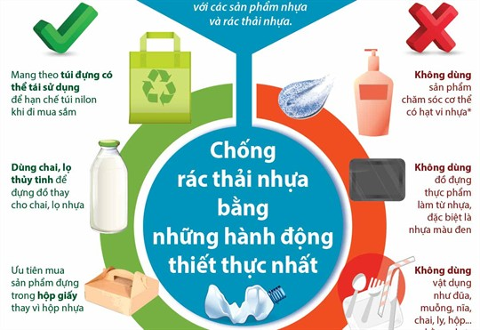

Đây là một trong những mục tiêu cụ thể của Đề án tăng cường công tác quản lý chất thải nhựa ở Việt Nam được Phó Thủ tướng Chính phủ Lê Văn Thành ký phê duyệt tại Quyết định số 1316/QĐ-TTg ngày 22/7/2021.
Thời gian thực hiện Đề án tăng cường công tác quản lý chất thải nhựa ở Việt Nam (sau đây gọi tắt là Đề án) là từ năm 2021 đến năm 2026.
Mục tiêu của Đề án là nhằm tăng cường quản lý chất thải nhựa từ trung ương đến địa phương, góp phần thực hiện thành công chiến lược quốc gia về quản lý tổng hợp chất thải rắn đến năm 2025, tầm nhìn đến năm 2050 được Thủ tướng Chính phủ phê duyệt tại Quyết định số 491/QĐ-TTg ngày 07 tháng 5 năm 2018; Quyết định số 1746/QĐ-TTg ngày 04 tháng 12 năm 2019 của Thủ tướng Chính phủ về Kế hoạch hành động quốc gia về quản lý rác thải nhựa đại dương; Chỉ thị số 33/CT-TTg ngày 20 tháng 8 năm 2020 của Thủ tướng Chính phủ về tăng cường quản lý tái sử dụng, tái chế, xử lý và giảm thiểu chất thải nhựa.
Bên cạnh đó, góp phần xây dựng mô hình nền kinh tế tuần hoàn ở Việt Nam với định hướng giảm sử dụng sản phẩm nhựa dùng một lần và túi ni lông khó phân hủy; tăng cường tái sử dụng, tái chế và xử lý chất thải nhựa.
Về cụ thể, Đề án đề ra mục tiêu hoàn thiện cơ chế, chính sách, pháp luật về: Quản lý chất thải nhựa; sản xuất và tiêu thụ túi ni lông khó phân hủy sử dụng trong sinh hoạt;sản phẩm nhựa dùng một lần sử dụng trong sinh hoạt (bao gồm cốc, chén, bát, đĩa, thìa, dĩa, ống hút, bao gói nhựa/hộp đựng thực phẩm sử dụng một lần, màng bọc thực phẩm, bộ đồ ăn nhựa dùng một lần...).
Phấn đấu đến năm 2025: Sử dụng 100% túi ni lông, bao bì thân thiện với môi trường tại các trung tâm thương mại, siêu thị phục vụ cho mục đích sinh hoạt thay thế cho túi ni lông khó phân hủy; đảm bảo thu gom, tái sử dụng, tái chế, xử lý 85% lượng chất thải nhựa phát sinh; giảm thiểu 50% rác thải nhựa trên biển và đại dương; phấn đấu 100% các khu du lịch, các cơ sở lưu trú du lịch, các khách sạn không sử dụng túi ni lông khó phân hủy và sản phẩm nhựa dùng một lần; giảm dần mức sản xuất và sử dụng túi ni lông khó phân hủy và sản phẩm nhựa dùng một lần trong sinh hoạt.
Nâng cao nhận thức của các cơ quan, tổ chức, doanh nghiệp, cộng đồng và người dân trong sản xuất, tiêu thụ, thải bỏ chất thải nhựa, túi ni lông khó phân hủy và sản phẩm nhựa dùng một lần trong sinh hoạt.
Điều tra, khảo sát đánh giá hiện trạng phát sinh, thu gom, xử lý chất thải nhựa và hoàn thiện chính sách, quy định về quản lý chất thải nhựa
Đánh giá tổng thể thực trạng sản xuất, sử dụng các sản phẩm nhựa, sản phẩm thân thiện với môi trường, sản phẩm nhựa dùng một lần và túi ni lông khó phân hủy; Khảo sát, đánh giá tình hình sản xuất và nhập khẩu sản phẩm hàng hóa chứa vi nhựa và ảnh hưởng của vi nhựa đến môi trường; Điều tra, khảo sát đánh giá hiện trạng phát sinh, thu gom, tái chế, xử lý chất thải nhựa và đề xuất các giải pháp nâng cao hiệu quả quản lý.
Xây dựng và triển khai chính sách thúc đẩy phát triển nền kinh tế tuần hoàn trong lĩnh vực sản xuất, tiêu dùng các sản phẩm nhựa; quy định trách nhiệm tái chế của nhà sản xuất, nhập khẩu các sản phẩm nhựa, bao bì nhựa; Hoàn thiện cơ chế, chính sách nhằm hạn chế sản xuất và sử dụng túi ni lông khó phân hủy, sản phẩm nhựa dùng một lần. Nghiên cứu, đề xuất lộ trình hạn chế sản xuất, nhập khẩu sản phẩm nhựa sử dụng một lần, bao bì nhựa khó phân hủy sinh học và sản phẩm, hàng hóa chứa vi nhựa.
Rà soát, hoàn thiện cơ chế, chính sách ưu đãi, hỗ trợ đối với hoạt động sản xuất các sản phẩm thân thiện với môi trường, sản phẩm thay thế sản phẩm nhựa dùng một lần và túi ni lông khó phân hủy; khuyến khích hoạt động tái sử dụng, tái chế chất thải nhựa phục vụ hoạt động sản xuất hàng hóa, sản xuất vật liệu xây dựng và tái sử dụng chất thải nhựa trong các công trình giao thông.
Nghiên cứu, đề xuất lộ trình tăng thuế bảo vệ môi trường đối với túi ni lông khó phân hủy; bổ sung thuế bảo vệ môi trường đối với sản phẩm nhựa dùng một lần phục vụ mục đích sinh hoạt; Xây dựng chính sách đồng bộ để phân loại, thu gom, tái chế, xử lý chất thải nhựa tại nguồn phù hợp với điều kiện của từng địa phương nhằm tăng cường tái sử dụng, tái chế chất thải nhựa, ...
Triển khai các hoạt động đào tạo, truyền thông và hợp tác quốc tế về quản lý chất thải nhựa
Đẩy mạnh các hoạt động đào tạo, truyền thông nâng cao nhận thức về tác hại của các sản phẩm có nguồn gốc từ nhựa, túi ni lông và sản phẩm nhựa dùng một lần đối với môi trường, hệ sinh thái và sức khỏe con người; nâng cao nhận thức, thay đổi thói quen sử dụng sản phẩm nhựa dùng một lần và túi ni lông khó phân hủy sang sử dụng các sản phẩm thân thiện với môi trường.
Tuyên truyền, vận động các doanh nghiệp sản xuất, phân phối các sản phẩm nhựa dùng một lần và túi ni lông khó phân hủy chuyển sang sản xuất, phân phối các sản phẩm thân thiện môi trường.
Hình thành mạng lưới tuyên truyền viên hướng dẫn phân loại, thu gom, tái chế, xử lý, quản lý chất thải nói chung và chất thải nhựa nói riêng trên các địa phương. Tổ chức tập huấn, bồi dưỡng kiến thức, kỹ năng nghiệp vụ thông tin, tuyên truyền về bảo vệ môi trường, quản lý chất thải nhựa cho đội ngũ cán bộ, phóng viên, biên tập viên của các cơ quan thông tin, báo chí và đội ngũ cán bộ làm công tác thông tin cơ sở. Khen thưởng, biểu dương kịp thời các tổ chức, cá nhân có các hoạt động, giải pháp, sáng kiến hay về quản lý chất thải nhựa.
Tăng cường hợp tác quốc tế, thu hút các tổ chức, cá nhân nước ngoài tham gia đào tạo, nghiên cứu và chuyển giao công nghệ, chia sẻ thông tin, kinh nghiệm nhằm nâng cao hiệu quả quản lý, xử lý chất thải nhựa ở Việt Nam; Vận động, thu hút các nguồn tài trợ, nguồn vốn từ các nước, tổ chức quốc tế trong việc đầu tư, phát triển, tiếp nhận công nghệ tái chế, xử lý chất thải nhựa và sản xuất sản phẩm thân thiện với môi trường thay thế sản phẩm nhựa dùng một lần và chuyển đổi sang nền kinh tế tuần hoàn, tăng trưởng xanh, …
Nghiên cứu, ứng dụng công nghệ, triển khai mô hình, hoạt động quản lý chất thải nhựa và sản xuất các sản phẩm thân thiện với môi trường
Nghiên cứu, ứng dụng công nghệ tiên tiến, hiện đại trong thu gom, tái chế và xử lý chất thải nhựa; công nghệ tái chế chất thải nhựa thành nhiên liệu, vật liệu xây dựng, giao thông và sản phẩm nhựa khác; Tăng cường đầu tư và phát triển công nghệ sản xuất các sản phẩm thân thiện với môi trường thay thế sản phẩm nhựa; nghiên cứu, thiết kế, sản xuất bao bì, sản phẩm nhựa tối ưu nhằm giảm tối đa định mức nguyên liệu nhựa/sản phẩm; Đẩy mạnh nghiên cứu, sản xuất các thiết bị thu gom, vận chuyển chất thải nhựa trên sông, suối, kênh, rạch, vùng biển.
Xây dựng kế hoạch và triển khai đồng bộ trên cả nước mô hình trung tâm thương mại, siêu thị không sử dụng túi ni lông hoặc sử dụng túi ni lông thân thiện với môi trường thay thế cho túi ni lông khó phân hủy; thành lập và mở rộng các mô hình tổ chức tái chế chất thải, các phong trào chống rác thải nhựa.
Xây dựng chương trình, kế hoạch tổ chức thu gom chất thải nhựa trôi nổi trong môi trường (thu gom, tái chế, xử lý chất thải nhựa trên lưu vực sông, vùng ven biển, các bãi tắm, các khu du lịch, các âu thuyền, chợ cá ven biển).
Tổ chức kiểm tra, giám sát các hoạt động thu thuế bảo vệ môi trường đối với hoạt động sản xuất và tiêu thụ túi ni lông khó phân hủy trên địa bàn thuộc trách nhiệm quản lý của các địa phương; đảm bảo thu đúng, thu đủ thuế bảo vệ môi trường.
Tăng cường triển khai hoạt động kiểm tra, thanh tra xử lý các tổ chức, cá nhân có hành vi vi phạm pháp luật về bảo vệ môi trường trong lĩnh vực sản xuất, phân phối sản phẩm nhựa và thu gom, vận chuyển và xử lý chất thải trong đó có chất thải nhựa, …